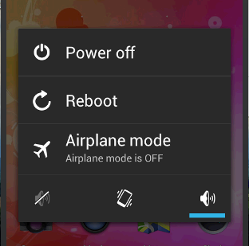

LoongEmbedded的专栏
WINCE+ANDROID,专注于嵌入式软件开发
 目录视图
目录视图 摘要视图
摘要视图 订阅
订阅 分类：
分类： MTK+Android开发（66）
MTK+Android开发（66） 
版权声明：本文为博主原创文章，未经博主允许不得转载。
MTK6577+Android之快速开机
今天测试了关机电流，就是长按power按键，弹出下图：

图1
选择Power off(关机)后发现电流还有25mA，和短按进入挂起时电流一样。但为什么关机是电流还有这么高了，而且在关机时电源指示灯还是亮的，那说明就没有真正关机。此时我按下power按键，设备重新启动，但很快就进入系统(大概9s)，比正常的拔掉电池后开机的29s短了不少。
难道这就是快速开机(ipo: instant power on)吗？MTK工程文件下
\mediatek\config\hsimobile77_ics2\projectconfig.mk
MTK_IPO_SUPPORT=yes
通过MTK_IPO_SUPPORT的设置来决定是否打开快速启动，如果为yes表示打开，否则为no。
关机的时候最后会调用pm_power_off()来关机的，见
\mediatek\platform\mt6577\kernel\core\core.c文件相关代码：
- void __initmt6577_init(void)
- {
- unsigned int tmp;
- pm_power_off = mt6577_power_off;
- #ifdefined(CONFIG_CACHE_L2X0)
- writel(L2X0_DYNAMIC_CLK_GATING_EN,PL310_BASE + L2X0_POWER_CTRL);
- writel(readl(PL310_BASE +L2X0_PREFETCH_CTRL) | 0x40000000, PL310_BASE + L2X0_PREFETCH_CTRL);
- /*L2C data ram access latency*/
- tmp = readl(PL310_BASE +L2X0_DATA_LATENCY_CTRL);
- tmp &= ~((0x7 << 4) | 0x7); //clear bit[6:4] and bit[2:0]
- tmp |= ((0x2 << 4) | 0x1); //3T readaccess latency & 2T setup latency
- writel(tmp, PL310_BASE +L2X0_DATA_LATENCY_CTRL);
- l2x0_init((void __iomem *)PL310_BASE,0x70400000, 0x8FBFFFFF);
- #endif /* CONFIG_CACHE_L2X0 */
- #ifdefined(CONFIG_HAVE_ARM_SCU)
- scu_enable((void *)SCU_BASE);
- /* set INFRA_ACP to 0x00003333 forreceiving transactions to ACP */
- writel(0x00003333, INFRA_SYS_CFG_BASE +0x0F04);
- #endif /* CONFIG_HAVE_ARM_SCU */
- }
可以看出实际是回调mt6577_power_off()来实现关机的，它的定义在
\mediatek\custom\hsimobile77_ics2\kernel\core\src\board.c下面：
- voidmt6577_power_off(void)
- {
- printk("core--->mt6577_power_off()\n");
- /* pull PWRBB low */
- rtc_bbpu_power_down();
- while (1) {
- printk("mt6577_power_off :check charger\n");
- if (pmic_chrdet_status() ==KAL_TRUE)
- arch_reset(0,"charger");
- }
- }
通过拉低RTC的PWRBB引脚来关机，如果判断有接入USB或是充电器，会进入关机充电流程。
关机充电时，拔出USB调用uboot的mt6577_power_off来实现关机的。
参考链接：
MTK 快速开机 技术详解
http://blog.csdn.net/loongembedded/article/details/42875759
深入解析Android关机
http://mobile.51cto.com/aprogram-418981.htm
http://blog.csdn.net/yangwen123/article/details/11722105
Android关机流程解析----很重要
http://blog.csdn.net/airk000/article/details/9177077
Android 长按电源键关机整个流程小学习
http://www.2cto.com/kf/201405/298310.html
http://write.blog.csdn.net/postedit
- 顶
- 0
- 踩
- 0
- 主题推荐
- mtk
- 猜你在找
- 1楼 baidu_32082893 2015-10-17 12:38发表 [回复]

- 我手机关机情况下，还在严重耗电，怀疑是自动开机功能的问题，请问MTK关闭自动开机的代码在哪里呢？
核心技术类目
- 个人资料

loongembedded

- 访问：829156次积分：12696等级：
 排名：第521名
排名：第521名
- 原创：380篇转载：372篇译文：0篇评论：439条
- 访问：829156次积分：12696等级：
- 博客专栏

文章：1篇
阅读：708
文章：87篇
阅读：144697
- 文章分类
- Android开发环境搭建(25)ARM微处理器(4)编程语言(8)WINCE bootloader开发(40)WINCE BSP移植(5)WINCE+ARM OAL开发(1)WINCE嵌入式操作系统(125)WINCE应用开发(39)系统、模块和专题(11)WINCE驱动开发(117)人生之旅(17)综合(6)基础知识(6)嵌入式软件工程师笔试和面试(5)投资和理财(15)软件和工具的使用(11)LINUX基础学习(7)管理(28)Android操作系统(37)无线通讯(21)Android驱动开发(34)linux内核(9)Android应用开发(26)物联网(8)IMX51(32)Linux驱动(29)Android Activity(3)Android Layout(7)MTK+Android开发(67)Android Bootloader(27)Android编译(17)Android应用开发环境搭建(14)Android调试工具(4)Android Framework(1)Android HAL(2)创业(1)高通Qualcomm+android(28)项目开发积累(9)Windows 10 IoT物联网系统(1)
- 阅读排行
- 用root直接登入ubuntu 14_04(25582)ARM汇编 beq和bne(11628)基于Android Studio搭建hello world工程(10331)Windows与Linux共享文件夹互相访问(9899)WIN7建立网络映射磁盘(7108)Android相对布局(RelativeLayout)(6728)LCD控制器时序参数的确定(基于TFT LCD: KD50G9-40NM-A3)(6217)MTK6577+Android之Camera驱动(5147)基于ubuntu10.04和ubuntu14.04搭建MTK6577+Android4.04开发环境的问题与解决(4677)Ubuntu12.04安装JDK6(4633)
- 评论排行
- 推荐文章
- 最新评论
- MTK6577+Android编译之androidEclipse如何生成jar包Eclipse如何生成jar包WINCE6.0+XP风格4寸480_800显示过小等问题修改2014年总结及展望2015总结过去10年的程序员生涯，给程序员小弟弟小妹妹们的一些总结性忠告MTK6577+Android之Camera驱动用root直接登入ubuntu 14_04关于三星A7屏幕锁已由管理员、加密政策，或证书存储禁用关于三星A7屏幕锁已由管理员、加密政策，或证书存储禁用
- nmgdaerjia: good！！！好
- loongembedded: @m75100313:就是选择Is Library后编译就会生成jar包在bin目录下。
- 爪哇武功盖世: 怎么混淆?
- lianglf2218: 厉害！谢谢博主分享！
- 马蹄哒哒马蹄声: 和项目组成员沟通时，没有特别注意语气和态度。这条深有体会，虽然自己是刚入职的菜鸟一枚，但是还是感觉程...
- 马蹄哒哒马蹄声: 很有益处的一篇文章
- 郁闷星期三: MDP mobile display processor
- loongembedded: @Alan_happy:现在可以了，我重新修改内容并验证过的
- loongembedded: @qq_32321075:还没有试过，你多百度下。
- qq_32321075: 清除证书无法打开怎么办？
- android开发技术链接
- WINCE+ARM开发链接
- 博客链接